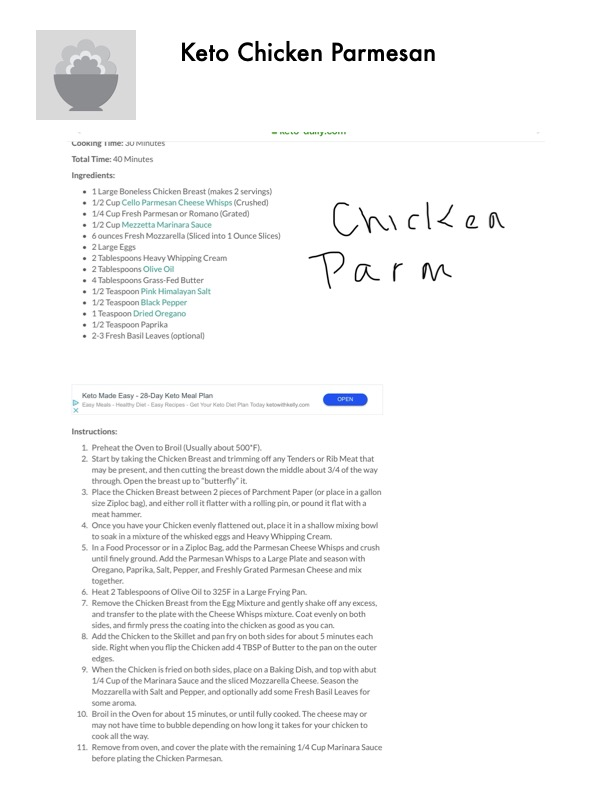

Keto Chicken Parmesan

Original cookbook page 2
A crispy, low-carb chicken parmesan using cheese whisps for coating, served with marinara and fresh mozzarella.
Prep: 10 minutes • Cook: 30 minutes • Total: 40 minutes
Ingredients
- 1 large boneless chicken breast (makes 2 servings)
- 1/2 cup Cello Parmesan Cheese Whisps (crushed)
- 1/4 cup fresh Parmesan or Romano (grated)
- 1/2 cup Mezzetta marinara sauce
- 6 ounces fresh mozzarella (sliced into 1 ounce slices)
- 2 large eggs
- 2 tablespoons heavy whipping cream
- 2 tablespoons olive oil
- 4 tablespoons grass-fed butter
- 1/2 teaspoon pink Himalayan salt
- 1/2 teaspoon black pepper
- 1 teaspoon dried oregano
- 1/2 teaspoon paprika
- 2-3 fresh basil leaves (optional)
Instructions
- Preheat the oven to broil (usually about 500°F).
- Take the chicken breast and trim off any tenders or rib meat, then cut down the middle about 3/4 of the way through. Open to butterfly it.
- Place chicken between 2 pieces of parchment paper and roll or pound flat with a meat hammer.
- Place flattened chicken in a shallow bowl to soak in whisked eggs and heavy whipping cream.
- In a food processor, crush Parmesan Cheese Whisps until finely ground. Add to a large plate with oregano, paprika, salt, pepper, and grated Parmesan. Mix together.
- Heat 2 tablespoons olive oil to 325°F in a large frying pan.
- Remove chicken from egg mixture, shake off excess, and coat evenly with cheese whisps mixture. Press coating firmly into chicken.
- Add chicken to skillet and pan fry both sides for about 5 minutes each. When you flip, add 4 tablespoons butter to the pan edges.
- When chicken is fried on both sides, place on baking dish and top with 1/4 cup marinara sauce and sliced mozzarella. Season mozzarella with salt and pepper, optionally add basil leaves.
- Broil in oven for about 15 minutes, or until fully cooked and cheese is bubbly.
- Remove from oven and cover with remaining 1/4 cup marinara sauce before serving.
Recipe #2 from collection